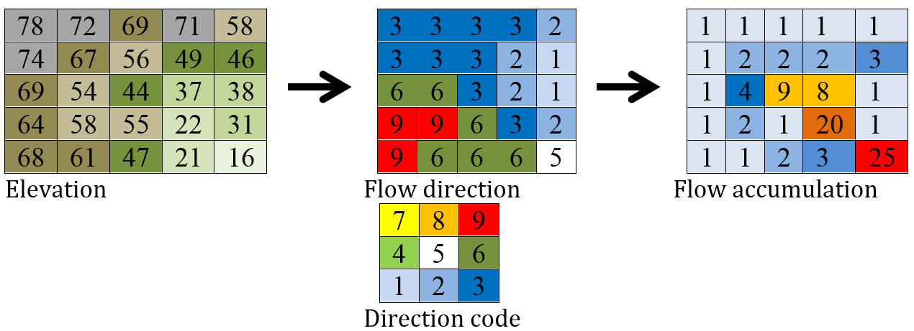

10. Data
Data requirements
Data format
In general data format is netCDF (version3 or version4)
For the mask map (to define the area of calculation) or the stations (to define the time series outputs) in can be either netCDF, Geotiff or PCRaster maps
Data storage structure
project
├── README.txt
│
├── areamaps
│ └── maskmap, stationmap
│
├── landcover
│ ├──forest
│ │ ├── cropCoefficientForest_10days
│ │ ├── interceptcapForest10days
│ │ ├── maxRootdepth, minSoilDepthFrac
│ │ └── rootFraction1, rootFraction2
│ │
│ ├── grassland (same var as forest)
│ │
│ ├── irrNonPaddy (same var as forest)
│ │
│ └── irrPaddy (same var as forest)
│
├───landsurface
│ ├── fractionlandcover, global_clone
│ │
│ ├── albedo
│ │ └── albedo
│ │
│ ├── topo
│ │ └── dz_Rel_hydro1k, elvstd , tanslope
│ │
│ └── waterDemand
│ └── domesticWaterDemand, industryWaterDemand, irrigationArea, efficiency
│
├── soil
│ ├── alpha, forest_alpha, lamdba, forest_lambda, ksat, forest_ksat, thetas, forest_thetas, thetar, forest_thetar
│ └── cropgrp
│
├── groundwater
│ └── kSatAquifer, recessionCoeff, specificYield
│
└── routing
├── ldd, catchment, cellarea
│
├── kinematic
│ └── chanbnkf, chanbw, changrad, chanleng, chanman
│
└── lakereservoirs
├── lakeResArea, lakeResDis,lakeResID, lakeResType, lakeResVolRes, lakeResYear,
└── smallLakesRes, smalllakesresArea, smalllakesresDis, smallwatershedarea
Static data
Mask map
mask map or coordinates to model only regions or catchments (value in mask = 1)
maps or coordinates for station to print time series

Figure 1: Mask map for the Rhine basin at 5’ showing in addition 6 stations
Warning
Make sure any cell defined in the mask map has a value (not NaN!) in the following map. A missing value in a cell will lead to a missing value in the result maps from the process this map is linked to.
The routing process will carry this missing value downstream!
Landsurface
Digital elevation model and river channel network
The model uses a digital elevation model and its derivate (e.g. standards deviation, slope) as variables for the snow processes and for the routing of surface runoff. The Shuttle Radar Topography Mission - SRTM (Jarvis et al., 2008) [1] is used for latitudes <= 60 deg North and DEM Hydro1k (US Geological Survey Center for Earth Resources Observation and Science) [2] is used for latitudes > 60 deg North

Figure 1: Digital elevation based on SRTM for 30’ and 5’

Figure 2: Standard deviation of elevation based on SRTM and 5’
River drainage maps
The river drainage map or local drain direction (LDD) is the essential component to connect the grid cells in order to express the flow direction from one cell to another and forming a river network from the springs to the mouth.
The approach to find the flow direction is in theory quite simple: There are eight valid output directions relating to the eight adjacent cells into which flow could travel. This approach is commonly referred to as an eight-direction (D8) flow model. The direction from each cell to its steepest downslope neighbour is chosen as flow direction. If the flow direction for each cell is given, a raster of accumulated flow into each cell can be calculated. Figure 4 shows the steps from DEM to flow direction to flow accumulation. Flow direction is shown in PC-Raster coding of the direction (ArcGIS uses another coding).
CWatM uses a local drainage direction map which defines the dominant flow direction in one of the eight neighboring grid cells (D8 flow model). This forms a river network from the springs to the mouth of a basin. To be compliant with the ISIMIP framework the 0.5° drainage direction map (DDM30) of (Döll and Lehner, 2002) [3] is used. For higher resolution e.g. 5’ different sources of river network maps are available e.g. HydroSheds (Lehner et al., 2008) [4] – DRT (Wu et al., 2011) [5] and CaMa-Flood (Yamazaki et al., 2009) [6]. These approaches uses the same hydrological sound digital elevation model but differ in the upscaling methods. Zhao et al. (2017) [7] shows the importance of routing schemes and river networks in peak discharge simulation. For CWatM the DDM30 is used for 0.5° and DRT is used for 5’.
{kind=link}
Figure 3: From elevation to flow accumulation

Figure 4: River network for the Rhine basin
River channel maps
Channel maps are describing the geometry like the length, slope, width and depth of the main channel inside a grid cell. Data used to get the geometry are mainly taken from elevation model and channel network.
Methodology
Flow through the channel is simulated using the kinematic wave equations. The basic equations used are the equations of continuity and momentum. The continuity equation is:
{\frac{\delta Q}{\delta x}} + {\frac{\delta A }{\delta t}} = q
The momentum equation can also be expressed as (Chow et al., 1988):
{A = \alpha Q^\beta}
The coefficients α and β are calculated by putting in Manning’s equation
Q = A v = \frac{AR^{2/3} \sqrt{So}}{n} = \frac{A^{5/3} \sqrt{So}}{n P^{2/3}}
Solving this for α and β gives:
\alpha = (\frac{nP^{2/3}}{\sqrt{So}})^\beta and \beta = 0.6
Channel length
The network upscaling method of Wu et al. (2011) [5] is tracing the finer river network inside the coarser resolution. Channel length of 5’ is traced from original SRTM channel length with the diagonal path taken to be √2 ∙ straight path.
Channel gradient
Channel gradient (or channel slope) is the average gradient of the main river inside a cell.
The approach taken here is to take the elevation from where the fine resolution channel enters the coarser grid cell and the elevation where it leaves the grid cell. Channel gradient is then calculated as:
Channel gradient = (elevation[in] –elevation[out]) / channel length.

Figure x: Channel gradient at 5 in % or tan(α)’
Manning’s roughness
Manning’s roughness coefficient (n) is one of the calibration parameter in CWatM. But on subbasin level an estimation of the spatial distribution of n is needed. n normally range between 0.025 (low land rivers) and 0.075 (mountainous rivers with a lot of vegetation, gravels). A low n = smooth surface results in a faster travel time and higher peaks. A high n = rough surface results in slower travel time and lower peaks. Inspection of the riverbed will reveal characteristics related to roughness. A treatment of the use of Manning’s coefficients is in McCuen (1998) [8]. Below is a first-approximation of Manning’s coefficients for some widely observed beds:
n = 0.04 - 0.05 Mountain streams
n = 0.035 Winding, weedy streams
n = 0.028 - 0.035 Major streams with widths > 30m at flood stage
n = 0.015 Clean, earthen channels
For the base map of Manning a regression function is used with 0.025 as the minimum value for flatland rivers with large upstream areas. A maximum of 0.015 is added for flatland rivers and small upstream areas (upstream area dependent) and another maximum of 0.030 is added if in mountainous areas (elevation dependent):
Manning =0.025 + 0.015 * min(50/upstream,1) + 0.030*min(DEM/2000,1)
Where:
upstream: upstream catchment area [km]
DEM: elevation from Digital elevation model [m]

Figure x: Manning’s roughness coefficient for 5’
Channel Bottom Width
The channel bottom width is calculated in two steps with the first step using a simply regression between channel width and upstream area and the second uses a better correlated one between average discharge and channel width. First the channel bottom width is calculated by a simply regression between upstream catchment area and width:
Channel width=upstreamArea ×0.0032
This first map is used to run CWatM to get an estimate on average discharge.
In the second step a regression formula from Pistocchi et al. 2006 [9] is used to calculate the channel bottom width with average discharge as regressor, because discharge seems to be better correlated to width than upstream area. This is quite obvious if you look at small alpine catchment with high precipitation and therefore high discharge and on the other side at big, almost semiarid catchments on the Iberian peninsula with low average discharge:
Channel width=average Q ^ 0.539
{kind=link}
Figure 6: Channel width at 5’
Channel bankful depth
Instead of deriving channel hydraulic properties from a non linear correlation with the upstream area we are using the Manning’s equation to get a better estimate. But for the first estimate (same as for channel bottom width) we use a correlation with upstream area:
Channel bankful depth = 0.27 upstreamArea^0.33
In the second step we use the Manning’s equation. We adopt a rectangular cross section and we assume depth is small compared to width. So the perimeter is assumed to be:
P = 1.01 * channel bottom width
Discharge for bankful discharge is assumed to be two times the average discharge (Qavg)
Q = 2 * Qavg
Q = \frac{A^{5/3} \sqrt{So}}{n P^{2/3}} \approx \frac{Wh^{5/3} \sqrt{So}}{n (1.01W)^{2/3}}
As we now know all the other variables we can solve this equation for bankful depth with some assumption:
This leads to the equation:
Channel bankful depth (h)= 1.004 N^{3/5} Q^{3/5} W^{-3/5} So^{-3/10}
Soil and soil hydraulic properties
Modeling of unsaturated flow and transport processes can be done with the 1D Richard equation, which requires a high spatial and temporal distribution of the soil hydraulic properties
\frac{\delta \Theta}{\delta t} = \frac{\delta}{\delta z}[K(\Theta(\frac{\delta h(\Theta)}{\delta z}-1)]-S(\Theta) (1D Richard equation)
With the simplification the 1D Richard equation e.g. flow of soil moisture is entirely gravitu-driven and matrix potential gradient is zero this implies a flow tha tis always in downward direction at a rate that equals the conductivity of the soil. The relationship can now be described with the model of Mualem (1976) [10] and with the van Genuchten model (1980) [11] equation. Please find a full description of the modeled soil processes in Burek et al. 2020
K(\Theta) = K_s(\frac{\Theta - \Theta_r}{\Theta_s - \Theta_r})^{0.5} \lbrace 1-[1-(\frac{\Theta - \Theta_r}{\Theta_s - \Theta_r})^{1/m}]^{m} \rbrace^{2} (Van Genuchten equation)
The soil hydraulic parameter \Theta_s \Theta_r \lambda and K_s are needed to simulated soil water transport for the van Genuchten model.
Harmonized World Soil Database
The Harmonized World Soil Database 1.2 (HWSD) FAO et al. (2012) [13] - Version 1.2 7 March, 2012 was developed by the Land Use Change and Agriculture Program of IIASA (LUC) and the Food and Agriculture Organization of the United Nations (FAO). The HWSD is a 30 arc-second raster database with over 16000 different soil mapping units that combines existing regional and national updates of soil information worldwide – the European Soil Database (ESDB), the 1:1 million soil map of China, various regional SOTER databases (SOTWIS Database), and the Soil Map of the World – with the information contained within the 1:5000000 scale FAO-UNESCO Soil Map of the World. The resulting raster database is linked to harmonized soil property data.

Figure x: Harmonized World Soil Database Index, FAO et al. (2012)
From the HWSD the standard soil properties like texture, porosity, soil minerals (% of sand, clay), organic mater and bulk density are used. For example Bulk density second soil layer 5-30 cm depth:

Figure x: Bulk density second soil layer 5-30 cm at 5’
Pedotransfer function Rosetta3
Soil parameters required by CWatM are obtained from soil properties by using a pedotransfer function.
A pedotransfer is used from Zhang and Schaap 2016 [14] to transfer the standard soil properties (soil texture, porosity, organic mater and bulk density) to the van Genuchten model parameters: \Theta_s (maximal amount of moisture) \Theta_r (residual amount of moisture) \lambda (pore-size index) K_s (saturated conductivity of the soil) and \alpha (inverse of air entry suction)
Rosetta3 code is available at: http://www.cals.arizona.edu/research/rosettav3.html
For example θs and Ks:

Figure x: Soil volumetric moisture content (θs) [%] second soil layer 5-30 cm at 5’

Figure x: Saturated hydraulic conductivity (Ks) [cm/day] second soil layer 5-30 cm at 5’
Groundwater
For groundwater modeling maps of the recession constant of the hydraulic conductivity and the storage coefficient are needed. Gleeson et al., (2011) [15] and Gleeson et al. (2014) [16] can provide data for this.

Figure x: Recession constant GLIM: [1/day] at 5’
Lakes and Reservoirs
The HydroLakes database http://www.hydrosheds.org/page/hydrolakes (Lehner et al. (2011) [17]; Messager et al. (2016) [18], provides 1.4 million global lakes and reservoirs with a surface area of at least 10ha. CWatM differentiate between big lakes and reservoirs which are connected inside the river network and smaller lakes and reservoirs which are part of a single grid cell and part of the runoff concentration within a grid cell. Therefore the HydroLakes database is separated into “big” lakes and reservoirs with an area ≥ 100 km2 or a upstream area ≥ 5000 km2 and “small” lakes which represents the non-big lakes. All lakes and reservoirs are combined at grid cell level but big lakes can have the expansion of several grid cells. Lakes bigger than 10000 km2 are shifted according to the ISIMIP protocol. Lake and reservoir (LR) data are specified by an id for each LR, type of LR (1 for lake, 2 for reservoir), area of LR, year of constraction of reservoir and average discharge at the outlet of LR.
Temporal data for each year
Crop coefficient
Based on: MIRCA2000—Global data set of monthly irrigated and rainfed crop areas around the year 2000. http://www.uni-frankfurt.de/45218023/MIRCA (Portmann et al., 2010) [19]
Land cover
Land cover is used to calculate fraction of water, forest, irrigated area, rice irrigated area, sealed (impermeable area) and the remaining fraction for each cell. For each fraction the soil module runs separately. The total runoff of each cell is calculated by weighting the cell according to the different fractions.
Source: https://lta.cr.usgs.gov/GLCC (US Geological Survey Center for Earth Resources Observation and Science)
Forest
Forest land cover is used from from Hansen et al. (2013) [20]

Figure x: Tree cover in 2010 at 5’
Sealed
Urban area or impervious surface area (ISA) based on.
Future projection based on:
Transient, future land use pattern generated by the LU model MAgPIE (Popp et al. 2014 [22]; Stevanovic et al. 2016 [23]), assuming population growth and economic as in SSP2 and climate change scenario RCP6.0

Figure x: Sealed area in 2010 at 5’
Albedo
Global Albedo dataset from Muller et al., (2012) [24]
Continous temporal data
Meteorological data
max, min, avg temperature [K]
humidity (relative[%] or specific[%])
surface pressure [Pa]
radiation (short wave and long wave downwards) [W m-2]
windspeed [m/s]
If potential evaporation is already calculated in a prerun or from external source
Precipitation [Kg m-2 s-1] or [m] or [mm] (can be adjusted by a conversion factor in the settings file)
Temperature (avg) [K]
Potential evaporation [Kg m-2 s-1] or [m] or [mm] (can be adjusted by a conversion factor in the settings file)
From observation: (see ISI-MIP 2a)
WFDEI.GPCC (Weedon et al. 2014) [25] WFD—Watch forcing data set: 0.5 3/6 hourly meteorological forcing from ECMRWF reanalysis (ERA40) bias-corrected and extrapolated by CRU TS and GPCP (rainfall) and corrections for under catch
PGMFD v.2 - Princeton (Sheffield et al. 2006) [26]
GSWP3 (Kim et al.) [27]
MSWEP (Beck et al. 2017) [28]
From Global Circulation models GCMs (see ISI-Mip 2b)
HadGem2-ES (Met Office Hadley Centre, UK)
IPSL-CM5A-LR (Institut Pierre-Simon Laplace, France)
GFDL-ESM2M (NOAA, USA)
MIROC-ESM-CHEM (JAMSTEC, AORI, University of Tokyo, NIES, Japan)
NorESM1-M (Norwegian Climate Centre, Norway)
References
Döll, P. and S. Siebert (2002). “Global modeling of irrigation water requirements.” Water Resources Research 38(4): 81-811.
Siebert, S., P. Döll, J. Hoogeveen, J. M. Faures, K. Frenken and S. Feick (2005). “Development and validation of the global map of irrigation areas.” Hydrology and Earth System Sciences 9(5): 535-547.